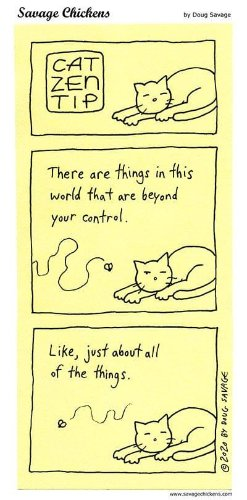

Acceptance. Sounds great. Let's!
Till we realize that “accepting” means relaxing into whatever comes… poverty, sleeplessness, sickness, death, betrayal, lies, suffering…
Whether we like it or not.
Much of the time, we decidedly do not like it.
I mean sure, acceptance is fine, but…not this. Because c’mon, we all need to sleep! We need health! Money! Safe children! Duh.
We're pretty sure we can’t be ok unless we get what we want.
And if that eludes us, bring on the sobs, the black depression, the lying in bed refusing to get up.
Still, existence doesn't care what any human likes. It kind-of has Likes of its own.
So we could always try pretending to accept, in hopes of tricking life into making bad situations go away. Perhaps by thinking right, we can make sleep come, cancer leave, death lose interest, and keep money from disappearing?
Oh powerful us.
Though that’s not acceptance. That’s manipulation. That’s trying to bend existence to our will.
Pssst- a secret: Existence is bigger than we are. No human is big enough to manipulate it.
Okay. So does that mean we have to accept situations we don’t like?
Nope. But let's face it- Not-Liking feels awful.
I mean, how much of life's heaviness and suffering results directly from refusal to accept anything other than What We Like?
Trying to score wants and likes comes with bunches of misery. Misery solidifies the sense of self.
Which means Not-Liking is actually a subtle trick to maintain the Self story.
Fine. So what?
Well, just for fun, rather than focusing on how to get what we Like, we might consider focusing on the Likes themselves. As in, is it really so darn important to like any experience? And... is it really worth the pain if we don't?
Meanwhile, circumstances continue to come and go. And if it was possible to accept even Not-Liked situations...who knows? Life, as it is, just might be more peaceful.
Which doesn’t mean we have to lie down and do nothing. It’s just that, once it’s seen that we can’t change most situations, and that pouting and wailing change nothing... We might be willing to stop trying to overcome and out-maneuver existence. We might even be able to give up that fight.
Which is so much easier than perpetually hurling ourselves against that wall.
Life, happening, reaction, experience.
This.
Liked or not.
Acceptance of both liked and disliked, dissolving our sense of individual importance.
And leaving...
Such relief.
And who doesn't like that?
Acceptance
